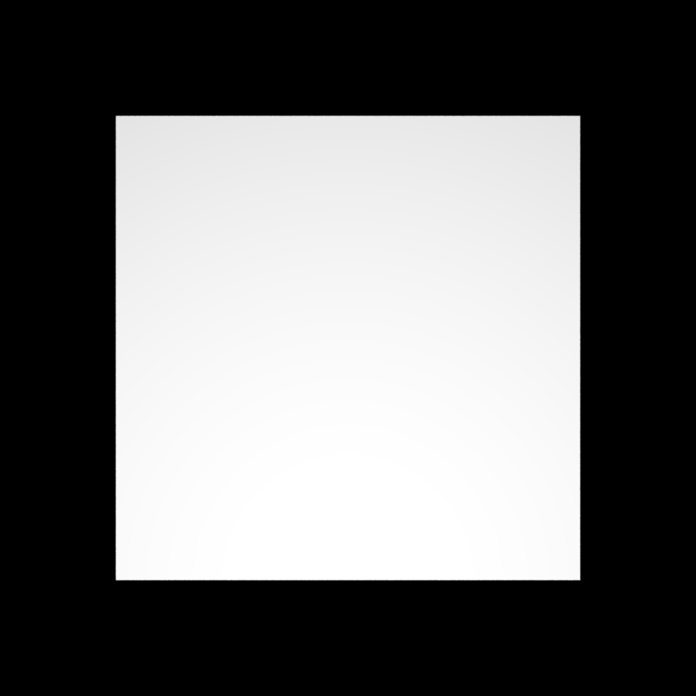
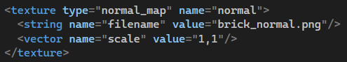

**Final Project Report**
Student1 Name: Yingzhe Liu
Student2 Name: Hairong Luo
**Motivational Image**
# Yingzhe Liu
## Images as Textures (5.3)
With this feature, shapes can take textures of arbitrary images, which greatly improves visual results. This is probably
the fastest way to approach realism
without adding too much computational burden. The following implementation is inspired by
https://cgl.ethz.ch/teaching/cg23/www-nori/example_reports/schuerch_roost/feature-image-as-textures.html
**Implementation**
To implement Images as Textures, I first created a new class ImageTexture inheriting from Texture with generic argument
of Color3f. In this way, it has access
to the eval() function which takes an uv coordinate as argument and returns the corresponding pixel color in the image.
In the constructor, I read the image into
an array. Here, I use the stb_image library's stbi_load() function and reads each pixel into 4 floats representing the
r, g, b, and a channels. In the eval()
function, I calculate the texture coordinate corresponding to the uv coordinate, then fetch the pixel color from the
image. Here, I assume that the uv coordinate
is from 0 to 1. I added the ability to scale the texture. The default scale is (1, 1). By setting the scale to (2, 2),
it means that the image is repeated 2
times horizontally and vertically. After fetching the pixel, I convert it to linear RGB if specified by the user.
To apply the image as texture, I modified the diffuse BSDF and the disney BSDF so that they can take an ImageTexture
class as the albedo or baseColor.
**Comparison with PBRT: plane**
I noticed that my implementation is a bit more blurred than PBRT's version. This is probably because PBRT implements
more advanced features like mipmapping to
counter the blurry effect.
**Comparison with PBRT: sphere**
One scene might look darker than the other. This is very likely caused by PBRT's implementation of point light: The
intensity of the point light is directly
given by the user rather than calculated from power. Converting power to intensity, I omitted the numbers after the
fourth digit.
**Linear rgb or raw: comparison on my implementation**
Raw representation is apprently less vibrant.
**Scaling effect: comparison on my implementation**
**Usage**
Field "linearRGB" is optional, the default value is true. Field "scale" is optional, the default value is 1,1.
**Modified files**
include/stb_image/stb_image.h
include/nori/diffuse_disney.h
src/image_texture.cpp
src/diffuse.cpp
src/diffuse_disney.cpp
## Normal Mapping (5.8)
Like using images as textures, normal mapping is also a fast way to add details to rendering results without adding to
much computational burden. It works by
specifying normals in an image for shading so that small intrusions or bumps can appear on the shape although they are
not actually being modelled. The following implementation is inspired by
https://www.opengl-tutorial.org/intermediate-tutorials/tutorial-13-normal-mapping/.
**Implementation**
The beginning part of the implementation is very similar to that of Images as Textures. I created a class NormalMap and
read a normal map image into an array representing the color elements of the image. Then, I transform the color values
into normal values: normal = color / 255 * 2 - 1. In this way, the normals are mapped to [-1, 1]. After this, since Nori
uses a left-handed system, I flipped and swapped the normal coordinates so that it works correctly. In the Mesh class, I
added the functionaly to add a normal map as its child. In the setHitInformation() function, I computed the tangent and
bitangent. Together with the vertex normal, I
formed a coordinate system that is in the normal space such that the normal in the normal map can be correctly
interpreted. That is done by following the OpenGL tutorial.
**With or without normal map on a blank plane: comparison on my implementation**

It is clear that the normal map appears on the plane.
**With or without normal map on a textured plane: comparison on my implementation**
Just like the last comparison, it is also visible that the brick wall with normal map has more details. The brick wall
with only image texture appears more flat.
**With or without normal map on a textured sphere: comparison on my implementation**
This is more apparent that the sphere now has the bumps and intrusions of the bricks.
**Comparison with mitsuba: sphere**
Note that the spheres do not face the same direction, and the lights seem to not have the same intensity. I did this
comparison really late, and I did not have
time to make it look better. From what I can see, the implementation looks correct.
**Usage**

Scale is an optinal variable. The default value is (1, 1).
**Modified files**
src/normal_map.cpp
src/mesh.cpp
include/nori/mesh.h
## Motion Blur for Arbitrary Objects (10.1)
This feature can improve visual effects of moving objects dramatically. Without the presence of this feature, it is hard
to visually cue that an object is moving. The result looks blurred, and the blurry part should cover the movemnt of the
object.
**Implementation**
To implement this feature, I first created the AnimatedTransform class. This class takes two transformation information:
one at the beginning of the movement,
and one at the end of the movement. It also takes the start and end time of the transformation. By default, they are 0
and 1. To get the transformation of the
object, I interpolate each component: translation, rotation, and scale in function getTransform(). The function later
combines the interpolated components into
a new transformation matrix and returns it. To intersect a ray with an animated object, I enlarge the bounding box of an
object so that it covers the entire
movement of the object in getAnimatedBoundingBox(). This function involves transforming a bounding box. To achieve this,
I added the ability to transform a
bounding box in class Transform. I modified the parser so that it can parse an animated transform. I then attached the
animated transform in the Shape class so
that this feature can apply to all shapes. There are also many modifications to the Shape class and its subclasses: the
constructor, activate() function to
enlarge the bounding box, getBoundingBox() function to enlarge a bounding box for a single triangle... Finally, I
modified the bvh acceleration such that
whenever it encounters an animated object, it transforms the ray into object space to intersect with the object. After
intersection, it transforms the
intersection query result back to world space.
**Comparison with PBRT: sphere moving vertically**
**Comparison with PBRT: sphere moving horizontally**
**Comparison with PBRT: sphere moving vertically and enlarging**
**Comparison with PBRT: cube rotating around z axis**
The above comparisons show that motion blur works, but there are minor differences, such as different lighting or motion
shading. I think that is very likely
due to diffenet implementations between mine and PBRT's.
**Usage**
All transform components are optional. If the animated transform involves rotation, a boolean divider to divide the
start and end rotation is required.
**Modified files**
include/nori/transform.h
include/nori/shape.h
include/nori/mesh.h
include/nori/proplist.h
src/mesh.cpp
src/curve.cpp
src/parser.cpp
src/proplist.cpp
src/bvh.cpp
## Simple Denoising: Bilateral Filter with Pixel Variance Estimates (10.3)
This feature provides a fast way to make the rendering result less noisy without increasing the number of samples.
However, the denoised result may not look as
good as if really sampled more when the noise is strong. The following implementation follows the equation in
https://en.wikipedia.org/wiki/Bilateral_filter.
**Implementation**
My denoiser is integrated into Nori. First, the user can specify whether to directly denoise an already rendered image,
or first render an image, and then
denoise the rendered result. Later, my denoiser reads in the image to render with stbi_load() and starts the
convolution. For each round of convolution, I
calculate the pixel variance in the convolution window following the equation given on class slides "Image Based
Denoising". Then, I follow the equation from
Wikipedia to calculate the denoised pixel in the current convolution window center. Finally, the denoise image is
written to an image file with the same name
of the rendering result but with "_denoised.png" added.
**Before and after denoising: comparison**
Here, the user defined paremeters are set to: sigma_space = 50, window_size = 9, k = 8, and skip_render = true. It is
clear to see that noise is decreased while
edges are preserved.
*k = 8 vs. k = 16: comparison*
Here, k is set to 16, and apparently, the image image becomes more blurred as the color distance part of the equation
contributes less to the final result.
**Usage**
All fields have default values, with window_size = 5, sigma_space = 50, k = 50, skip_render = true.
**Modified files**
include/nori/denoiser.h
src/denoiser.cpp
src/render.cpp
## Advanced Hair BCSDF (15.1)
**Describe your implementation**
Unfortunately, I did not have time to implement this feature.
## Hair Shape and Acceleration Data Structure (15.2)
This feature is essential for rendering hair and fur. It is computational heavy, and a designated acceleration struture
might be needed. The following
implementation is inspired by https://www.pbrt.org/hair.pdf.
**Implementation**
First, the hair file reader reads in cyhair files described in http://www.cemyuksel.com/research/hairmodels/ and parses
it into Bezier curves represented by
four control points. For each curve, I divide it into smaller curves by using the Bezier blossom method. In this way,
the bounding box for each small curve
can bound the curve tighter, compared to one big bounding box for one long curve. To intersect the curve with a ray, I
first transform the curve into ray space
so that later calculations are easier to perform. After these preparations, the recursive intersection routine begins.
It works like merge sort, which
recursively devide the curve into half until a certain depth is reached. Then, it approximates the curve with a straight
line segment since at the desired depth
the error of intersecting a line segment and a curve is negligible. After this, it tests hit with the ray and returns
the hit result.
**Comparison**
Unfortunately, I did not have time to test my implementation, but the desired result when rendering a cute bunny with
long fur should look like (from PBRT):
**Modified files**
include/nori/curve_common.h
src/curve.cpp
# Hairong Luo
## Advanced Camera Effects (5.1)
### Depth of Field
involved files:
perspective_dof.cpp
This feature implements a thin lens camera with depth of field. Apart from the normal parameters of a pinhole camera, it
also takes a lensRadius and a focalDistance, which characterize the parameters of the thin len.
During ray sampling, we will make use of the property of the thin lens camera that any ray originates from the same
point on the film plane and passes though the thin len will end up on the same point of the plane of focus, and a ray
passing through the center of the thin len will not change its direction. We first compute the corresponding point on
the near plane with respect to the sampled position and transform it to the camera coordinate. Then we shoot a ray from
the center of the len through the near plane point. The intersection of this ray with the plane of focus is the point
that our sampled ray will end up on. We then uniformly sample a point on the len. Our sampled ray will originate from
the sampled point on the film, passes through the sampled point on the len and eventually reach the point on the plane
of focus. We transform the ray to the world coordinate and return it.
** Comparison with PBRT **
## Simple Extra Emitters (5.10)
### Directional Light
involved files:
directional_light.h
directional_light.cpp
Directional Light is used to simulate the light from far away, like the sun light. It covers the whole scene, has a
fixed direction and remains constant during transmission. It has two parameters: radiance and direction. So the pdf is
1.0 everywhere if it's not occluded. And the eval method always returns the radiance. When sampling a directional light,
the sampled point is an infinitely far point at the source direction of the light.
** Comparison with Mitsuba **
### Spotlight
involved files:
spotlight.cpp
The spotlight is a delta emitter. It emits light in a cone around its position. The light intensity is constant within a
certain angle to its direction, and will gradually attenuate as the angle increase according to a falloff curve
function. The radiance will also attenuate with a factor of squared distance. Spotlight has properties including
position, direction, intensity, cosFalloffStart and cosFalloffEnd. When sampling a spotlight, the sampled point is
always its position. The pdf is always 1.0. The eval method returns the intensity scaled by the falloff curve and
divided by the squared distance.
** Comparison with Mitsuba **
## Object Instancing (5.17)
I didn't implement this feature due to the time constraint.
## Homogeneous Participating Media (with path tracing integrator) (15.4)
involved files:
medium.h
medium.cpp
homogeneous.h
homogeneous.cpp
shape.h
shape.cpp
phase_function.h
isotropic.h
isotropic.cpp
trivial_bsdf.cpp
volpath_mats.cpp
First I define a Medium class. It has properties including sigmaA, sigmaS, sigmaT and the phase function. A medium
should be attached to a shape. A shape can attach an interior medium and an exterior medium. The
HomogeneousMedium class inherits from the Medium class. It also implements evalTransmittance, sampleDistance and eval
functions. We evaluate the transmittance of a ray segment inside the medium by getting the length of the ray segment as
the path length and compute the transmittance on it. When performing free-path sampling, we use inversion method to
sample the path length. If the next surface is hit before the ray reaches the end of the sampled path, the free-path
sampling fails. We compute pdfSuccess and pdfFailure using their formula.
I also implemented the PhaseFunction class. It is an abstract class providing pure virtual functions `sample`, `eval`
and `pdf`. The Isotropic class inherits from the PhaseFunction class. Its eval and pdf methods both return `1.f / (4 *
PI)`. The sample method uniformly samples on a sphere in the local coordinate frame of `wo` and transforms it to the
world coordinate frame. It returns a PhaseFunctionSample object containing the phase value, the sampled `wi` and the
pdf.
A Trivial BSDF class is implemented for the boundary of a medium. It is a discrete BSDF which just let the ray continue
transmitting without any change.
I implemented VolpathMATS class as the volumetric path tracing integrator. It first gets the initial medium from the
scene and shoots the first ray. In the loop we distinguish between two cases. In the first case, the ray segment is
inside a medium and the free-path sampling succeeds. It accumulates the throughput of this segment, then samples the
next ray segment direction using the phase function and shoots the ray. The phase value should also be accumulated to
the throughput. In the second case, the ray segment is outside any medium or the free-path sampling fails. If it's in
the medium, it accumulates the throughput of this segment. If the ray doesn't hit anything, the tracing ends. If a
emitter is hit, it accumulates the radiance. After that, it samples the bsdf to get the new ray segment and accumulate
throughput and eta. If the intersection is a medium transition, we update the current medium for the new ray segment.
Russian roulette is used to terminate the tracing.
** Comparison with Mitsuba **
## Emissive Participating Media (10.7)
involved files:
emissive.h
emissive.cpp
emisvolpath_ems.cpp
emisvolpath_mats.cpp
scene.h
scene.cpp
shape.h
shape.cpp
sphere.cpp
mesh.h
mesh.cpp
My Emissive Participating Medium is implemented based on Homogeneous Participating Medium. EmissiveHomogeneousMedium
class inherits from HomogeneousMedium. There is an additional field Le.
For EmisvolpathMATS integrator, the main difference between the non-emissive version and it is that it also accumulates
the radiance of the medium when the ray is scattering in the medium.
For EmisvolpathEMS integrator, the logic is as follows: We should distinguish between direct illumination and indirect illumination. If the first camera ray hits an emitter, we account for its contribution; otherwise we don't accumulate its radiance when hitting an emitter. If the first camera ray ends up inside an emissive medium, we also account for its contribution, and for other cases we don't accumulate its radiance directly.
For this integrator we also need to trace a ray path by phase function sampling and BSDF sampling. During the process we do emitter sampling for each ray vertex. In my implementation I sample an emitter and an emissive medium each for each ray vertex and add up their contributions (with importance sampling).
Each time it performs emissive medium sampling, it needs to sample a random point inside the emissive medium. We uniformly sample a point in the bounding box and judge if the sampled point is inside the medium by shooting
rays from current path vertex to the sampled point. Then we count the total number of intersections with surfaces. According to whether the current path vertex in inside a medium, we can
know if the sampled point is in the medium by looking at if the number of intersections is even or odd (assuming no other mediums are in the bounding box of the target medium). This can be applied to both convex and concave media.
To calculate the pdf of an emissive medium sampling, we need to estimate the volume of the medium. This is achieved by Monte Carlo sampling inside the medium's bounding box.
After sampling the emitters, the integrator needs to estimate the transmittance from the current vertex to the sampled point. It shoots consecutive rays from the current path vertex to the sampled point and return the multiplication of transmittances of each ray segment. If one of the ray segments is blocked by a non-medium shape, it is equivalent to shadow ray check fails. So it simply returns zero transmittance.
Since there's no emissive participating medium implementation in pbrt or mitsuba, I compare it with normal homogeneous
medium.
** MATS integrator **
There is still some bugs with the EMS integrator in my code. I put the comparison with MATS integrator here.
** EMS integrator **
## Disney BSDF (15.5)
involved files:
disney.cpp
disney_util.h
disney_util.cpp
diffuse_disney.h
diffuse_disney.cpp
metallic.h
metallic.cpp
clearcoat.h
clearcoat.cpp
glass.h
glass.cpp
I implemented Disney BSDF according to a UCSD assignment manual
(https://cseweb.ucsd.edu/~tzli/cse272/wi2023/homework1.pdf). In this implementation the Disney BSDF is made of five
components. Since the parameters related to `sheen` is not required, I omit it and implemented the other four
components, namely `diffuse`, `metallic`, `clearcoat` and `glass`. The four components are each implemented as a
individual BSDF class. And the Disney class holds the pointers to the four components.
The diffuse lobe captures the base diffusive color of the surface. It uses a modified version of the Schlick Fresnel
approximation, which involves `baseColor` and `roughness`. I skipped the subsurface scattering lobe part since it is not
required for the project. So the final $f_{diffuse}$ is equal to $f_{baseDiffuse}$. We use a cosine hemisphere sampling
to sample the diffuse lobe.
** diffuse lobe **
The metallic lobe features major specular highlights. It involves roughness and anisotropic parameters. It uses a
standard Cook-Torrance microfacet BRDF. For the Fresnel term $F_m$, it uses the Schlick approximation. For the normal
distribution function $D_m$, it uses the anisotropic Trowbridge-Reitz distribution (GGX). I also implemented the
anisotropic parameter here. The average occlusion factor $G_m$ is the Smith model.
** metallic lobe **
The clearcoat lobe models the heavy tails of the specularity. It takes clearcoatGloss as a parameter. $F_c$ has a
hard-coded index of refraction $\eta=1.5$. $D_c$ uses an isotropic roughness and $G_c$ uses a fixed roughness 0.25.
** clearcoat lobe **
The glass lobe handles transmission. It uses the actual Fresnel equation for the dielectric materials. $D_g$ and $G_g$
are the same as the metallic case.
To add a dielectric specular reflection to the BSDF, we modify the Fresnel term $F_m$ to include an achromatic specular
component. This add `specular`, `specularTint` and `metallic` parameters to Metallic lobe.
** Comparison on Metallic of different roughness, anisotropic, specularTint, specular, metallic values (roughness and
anisotropic are fixed to 0) **
** specularTint **
** specular **
** metallic **
Finally the components are combined using the following formula.
$$
f_{disney} = (1 - specularTransmission) \cdot (1 - metallic) \cdot f_{diffuse} + \\
(1 - specularTransmission \cdot (1 - metallic) ) \cdot f_{metallic} + \\
0.25 \cdot clearcoat \cdot f_{clearcoat} + \\
(1 - metallic) \cdot specularTransmission \cdot f_{glass}
$$
I made an overall comparison with Mitsuba using random parameters. Due to lack of unimplemented parameters and maybe
difference in implementation of Disney BSDF, the rendering result is somewhat different from that of Mitsuba.
metallic=0.7
roughness=0.2
specular=0.6
specularTint=0.4
clearcoat=0.6
anisotropic=0.5
clearcoatGloss=0.3
specularTransmission=0.4
** rendered with another group of parameters **
...
**Rendering Result**
The image is rendered with the following features:
Images as Textures
Motion Blur for Arbitrary Objects
Directional Light
Spotlight
Disney BSDF
All models rendered are downloaded free from internet:
https://www.turbosquid.com/
sketchfeb.com
cgtrader.com